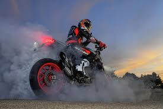

La historia de la motocicleta se remonta al siglo XIX cuando el estadunidense Sylvester Howard Roper (1823-1896) inventó un motor de cilindros a vapor (accionado por carbón) en 1867. Esta puede ser considerada la primera motocicleta, si se permite que la descripción de una motocicleta incluya un motor a vapor.[1]
Los alemanes Wilhelm Maybach y Gottlieb Daimler construyeron una moto con cuadro y cuatro ruedas de madera y motor de combustión interna en 1885. Su velocidad era de 18 km/h y el motor desarrollaba 0,5 caballos.[2] [3]
Gottlieb Daimler usó un nuevo motor ideado por el ingeniero Nikolaus August Otto, quien inventó el primer motor de combustión interna de cuatro tiempos en 1876. Lo llamó «Motor de ciclo Otto» y, tan pronto como lo completó, Daimler (antiguo empleado de Otto) lo convirtió en una motocicleta que algunos historiadores consideran la primera de la historia.[4] En 1894 Hildebrand y Wolfmüller presentan en Múnich la primera motocicleta que fue fabricada en serie y con claros fines comerciales. La Hildebrand y Wolfmüller se mantuvo en producción hasta 1897.[5][6]Los hermanos rusos Eugéne y Michel Werner afincados en París montaron un motor en una bicicleta. El modelo inicial con el motor sobre la rueda delantera se comenzó a fabricar en 1894.[7]
Motocicleta Derbi. 49 cc. 1966.
En 1902 se inventó la motoneta o scooter, también conocida en su momento como «autosillón», por el francés Georges Gauthier. La motoneta es un tipo de motocicleta[b] provista de una estructura de cuadro abierto, un asiento y una plataforma para los pies en la que el conductor se apoya (sin montar a horcajadas sobre parte alguna del motor). Inicialmente, las motonetas usaban una transmisión manual con el control de cambio de marchas y embrague integrado en el manillar izquierdo,[15] pero a partir de la década de 1980 en adelante, generalmente usan una transmisión automática continuamente variable (CVT). Fue fabricada en 1914 y desde entonces ha tenido una gran popularidad, sobre todo entre los jóvenes. Incorpora dos ruedas de poco diámetro y un cuadro abierto que permite al conductor estar sentado en vez de a horcajadas. También tiene una carrocería que protege todos los mecanismos y ofrece algún pequeño espacio de almacenaje de objetos pequeños, además de una rueda de recambio en algunos modelos. Son vehículos urbanos, aunque también se pueden hacer viajes largos. Lo que destaca en este tipo de transporte es la comodidad del manejo y facilidad de conducción, y no el desarrollo de grandes velocidades.
La historia de las motos está llena de mentes brillantes que impulsaron su evolución desde simples bicicletas con motor hasta máquinas complejas y tecnológicamente avanzadas. Figuras clave incluyen a Daimler y Maybach, quienes crearon la primera motocicleta con motor de combustión interna, y a otros ingenieros que perfeccionaron el diseño, la velocidad y la comodidad. Marcas como Harley-Davidson, Honda, Yamaha, y otras, han continuado innovando, cada una aportando su propia visión al mundo de las motocicletas.
